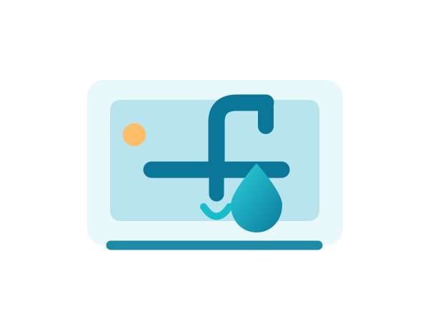
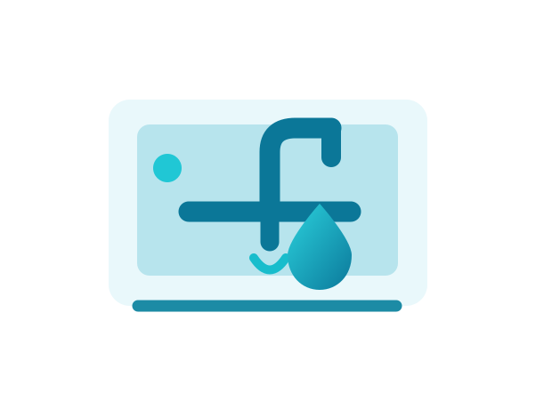

Lampista urgente
Atención a averías de fontanería que requieren una respuesta rápida
Ver detalles →Soluciones de fontanería: fugas de agua, grifos, cisternas, tuberías, desatascos y pequeñas instalaciones. Cuéntanos qué necesitas y consulta disponibilidad.

Desde una cisterna que pierde agua hasta la sustitución de un grifo, encuentra información sobre cada servicio y solicita una valoración según el problema.
Atención a averías de fontanería que requieren una respuesta rápida
Ver detalles →Consulta disponibilidad para incidencias fuera del horario habitual
Ver detalles →Localización y reparación de pérdidas de agua
Ver detalles →Soluciones para desagües y tuberías obstruidas
Ver detalles →Sustitución e instalación de grifería
Ver detalles →Arreglo de mecanismos y pérdidas de agua en el inodoro
Ver detalles →Montaje y sustitución de termos de agua caliente
Ver detalles →Intervenciones en conducciones y conexiones de agua
Ver detalles →Diagnóstico del posible origen de manchas y filtraciones
Ver detalles →Adaptación de tomas y desagües durante una reforma
Ver detalles →Revisión y mantenimiento de instalaciones comunes
Ver detalles →Reparaciones e instalaciones en comercios y locales
Ver detalles →
Una intervención comienza por entender el origen del problema. Describe cuándo apareció la avería, qué elementos afecta y si puedes cerrar la llave de paso.
Consulta la posibilidad de atención en estas poblaciones. La disponibilidad y el desplazamiento se confirman antes de cada servicio.
Explica tu avería y solicita información sobre atención y disponibilidad.
Si es seguro hacerlo, cierra la llave de paso y evita el contacto con instalaciones eléctricas mojadas. Contacta con un profesional y, si existe riesgo inmediato, utiliza los servicios de emergencia correspondientes.
Puedes llamar y describir la incidencia para consultar la disponibilidad. La atención fuera de horario y el tiempo de llegada deben confirmarse.
Solicita información sobre diagnóstico, desplazamiento, materiales y mano de obra antes de autorizar cualquier trabajo.